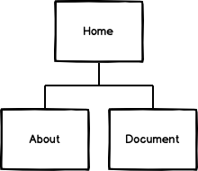
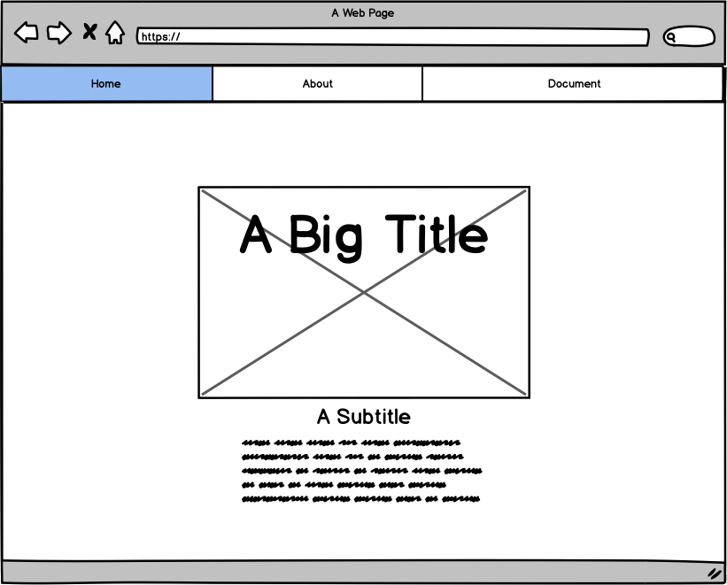
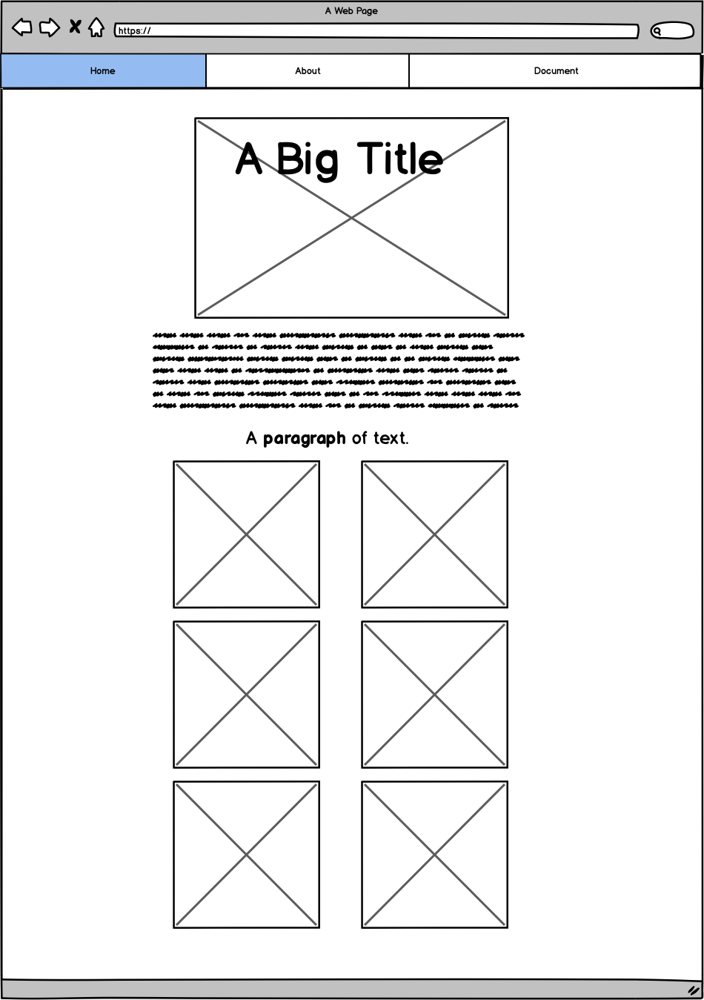
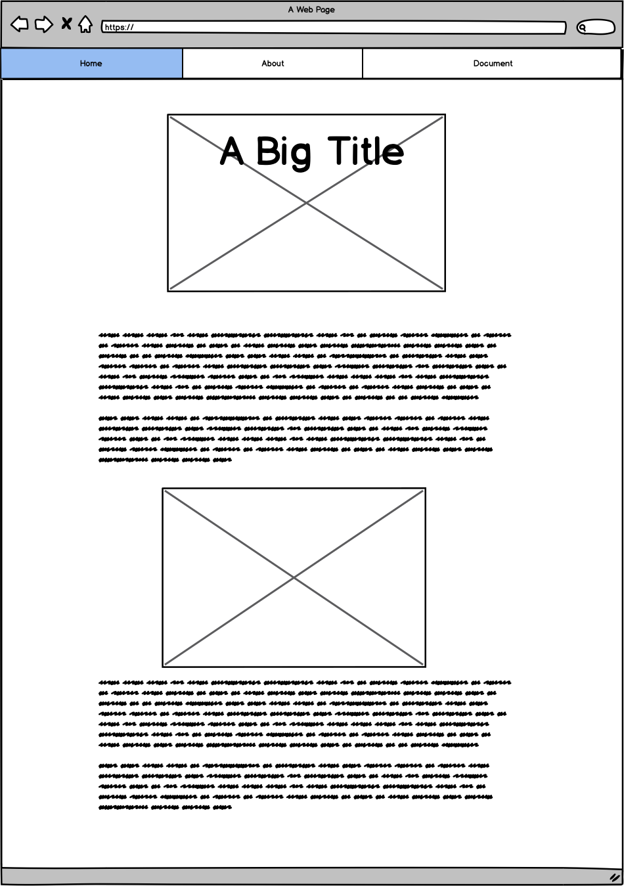

Document
Abstract
Ho creato questo sito per far conoscere più a fondo il profilo Studymojji di Gabriela Baciu su Instagram. Il mondo dello Studygram mi interessa, quindi
ho voluto in un modo promuovere ciò che pubblica lei. Ciò che aggiunge questo sito è un'esposizione maggiore a questo mondo per chi studia all'università
o in altri posti.
Benchmarking
1. Obiettivi
Il sito è stato creato per permettere alle persone di capire che cos'è lo Studygram e vedere cosa può comprendere attraverso il profilo Studymojji.
2. Target utente
Il target utente è principalmente studente o comunque persone che preferiscono programmare la propria giornata oppure organizzare gli impegni
di una giornata.
3. Competitors
I principali competitors sono su Instagram visto che il trend è iniziato li. Come https://www.instagram.com/studyng/ un account che posta foto
ispirazionali e visivamente belle. Lei ha più di 200mila follower e posta regolarmente. Ci sono però anche dei blog che si occupano di questo.
Il più conosciuto è https://emmastudies.com/ che ha dato inizio al trend di Studyblog. Il suo target utente sono le persone che navigano su internet
in cerca di template da stampare come calendari e vari post sui daily struggles che una studentessa può affrontare. Il suo è un sito realizzato in modo
da sembrare un notepad con post che fluttuano sulla pagina e con colori pastello. Questo sito si concentra su ciò che è l'account Studymojji.
Struttura e layout
1. Architettura del sito.
2. Wireframe.
  3. Look and Feel.
I colori principali che ho usato sono bianco e nero, questo rende il sito semplice da leggere e minimalista. Lo sfondo è di colore nero per fare spiccare
le foto e il testo. Gli utenti possono apprezzare le foto presenti senza la luminosità in sottofondo creando così un effetto "a luci spente".
Ho scelto il font Monserrat che è semplice ed elegante per non caricare troppo lo schermo.
Linguaggi e strumenti
1. Linguaggi.
I linguaggi utilizzati per la creazione del sito sono HTML5 e CSS3. Il template è stato creato da me interamente.
2. Strumenti.
Per quanto riguarda la progettazione ho utilizzato Sublime Text 2 come text editor, FontAwsome per le icone, i colori sono quelli predefiniti e Google Fonts
per il font. Per il controllo delle visualizzazione ho usato Google Analytics, per la pubblicazione Github e per il wireframe Balsamiq. Per la condivisione ho usato Instagram come mezzo principale. Per la ricerca dei competitor ho usato Google.
Communication Strategy
1.Background.
Il sito è realizzato seguendo un'idea semplice e facile da capire per permettere all'utente una facile comprensione e interazione. Lo stile usato nella
creazione ha l'intenzione di riprodurre l'idea minimalista e di coinvolgere l'utente a vedere che non è una cosa complicata. Lo Studygram può sembrare
difficile e impegnativo per alcuni e questo sito ha lo scopo di mostrare che non è vero. Da questo punto di vista il sito è efficace perchè le foto postate
dal profilo instagram che sono presenti anche sul sito sono realizzate realmente quindi ispirano l'utente a contribuire e a provare. Per quanto riguarda
i competitor sopra citati, sono comunque più avanzati quindi le cose postate possono sembrare impossibili da realizzare da sè. Invece Studymojji è anche
fatto per quelli che sono alle prime armi e che vogliono sperimentare anche con un Bullet journal.
2. Obiettivi Comunicativi.
Questo sito è stato realizzato per mostrare la semplicità che c'è nell'organizzare il modo di studiare. L'obiettivo principale è fare pubblicità all'account
Studymojji che si occupa di mostrare l'accessibilità di tutti al mondo dello Studygram.
3. Target audience e messaggio.
Il sito si rivolge principlamente ad una audience giovane, solitamente under 30 che sta studia. Il modo più efficace per arrivare ad avere l'attenzione dei
giovani è attraverso l'utilizzo dei social infatti il canale principale è Instagram. C'è molto pregiudizio sul fatto che questo stile di organizzazione abbia
bisogno di tanto tempo e di pazienza e creatività però in realtà è molto più semplice di quello che sembra. Il messaggio che voglio trasmerrere è che
non è realmente così impegnativo come può sembrare sui blog oppure sui profili più seguiti. Vorrei che più persone sperimentino e riescano a
raggiungere gli obiettivi prefissati attraverso questo modo di organizzazione.
4. Promozione.
I mezzi usati per la promozione sono sopratutto la condivisione su Instagram e la richiesta di shoutout da altri account simili per aiutarsi a vicenda.
5.Valutazione dei risultati.
L'obiettivo principale è stato raggiunto perchè molte più persone provano lo Studygram me compresa, perciò il target audience si amplia ogni giorno
di più facendo cogliere il messaggio agli studenti del mondo. Questo è stato confermato dal numero di follower e dei like presenti sul profilo Instagram,
uno dei Social Media più usati al mondo.